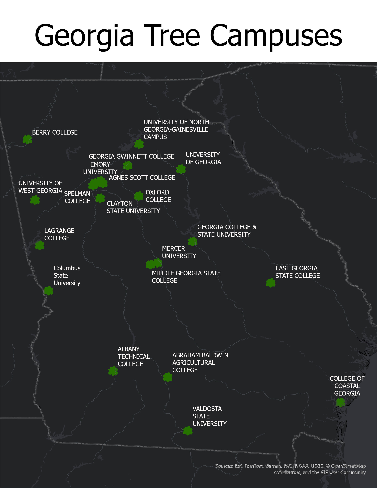

Made in Cesium!
Georgia Tree Campuses
Introduction
The powerpoint shows a list of Campuses desginasted as "Tree Campus USAs" but what does that mean? The Arbor Day Foundation which gives out this designation has 5 requirments: Have a tree advisory committee, campus tree plan, an tree program with dedicated annual expenditures, observe arbor day, and have a service learning project. There are a total of 412 campuses in the US with this designation with 49/50 states having a tree campus. For more info click here!
The area of interest for this project is Georgia colleges/unviersities. Georgia has over 90 colleges and unviersities with 20 of those being designated as Tree Campus USA. 6 of these colleges/unviersities will be highlighted for this project.
As such the goal of this project is to highlight 6 colleges/universities that are Tree Campuses in Georgia. This will be done through maps and a Cesium Powerpoint giving a closer look at these campuses.
Methodology
In order to carry out the goal of this prroject and to fufill the requirments of my assignment I sought out lidar data for Georgia. The data was pulled from USGS Lidar Explorer and using LAStools to turn LAZ files to LAS files. I downloaded 20 las files split across the 6 different colleges. These files were then colorized using NAIP 2023 data from the USDA and put into CesiumIon. The addtional visualizations were created from data sources in the citations section using ARCGis Pro.
Though a seemingly straightfoward process there was a lot of struggle in the completion of the project. A major hiccup in the process was when when visualizing the LAS data. When adding the data to the map instead of appearing in Georgia it would appear in Alabama. This was due to the downloaded data not having a coordinate system and then when a coordinate system was applied it sent the data to Alabama for some reason. Eventually after research I found the correct coordinate system for the data and it the data succesfully appeared in Georgia.
The second issue in the process was colorzing the data. The issue came from the extent of the data being too large leading to an error. This was a frustrating issue at first but had the simple solution of downsizing the amount of data which ultiamtely led to lower processing times and properly colorized data.
Citations
What follows is the data used to complete thsis project. This includes data used for the cesium power point and additional visualizations. https://www.agnesscott.edu/center-for-sustainability/campus-landscape.html https://www.arborday.org/our-work/tree-campus-higher-education https://www.agnesscott.edu/about/index.html https://www.arcgis.com/home/webmap/viewer.html?webmap=0ecb05ec9e0540d3a201c4ef9d2aee88 https://apps.nationalmap.gov/lidar-explorer/#/ https://www.gatech.edu/about/rankings https://gwinnetttech.edu/about/history/ https://www.mercer.edu/about-mercer/ https://www.spelman.edu/about/index.html https://www.spelman.edu/profile-news/2025/03/exploring-spelman-colleges-arboretum-and-sustainability-efforts.html https://www.spelman.edu/profile-news/2025/03/exploring-spelman-colleges-arboretum-and-sustainability-efforts.html https://sustainability.uga.edu/living-lab/Arboretum_Model_Project/ https://gis.apfo.usda.gov/arcgis/services/NAIP/USDA_CONUS_PRIME/ImageServer Data | Multi-Resolution Land Characteristics (MRLC) Consortium
Page and visualizations created by Charles Petty for GEO 409, Department of Geography, University of Kentucky. Spring 2024.
Vizualizations

This is the map of overall Georgia tree canopy in
Want to see a hi-rez version? Map of Georgia Tree Campuses
Want to see a hi-rez version?